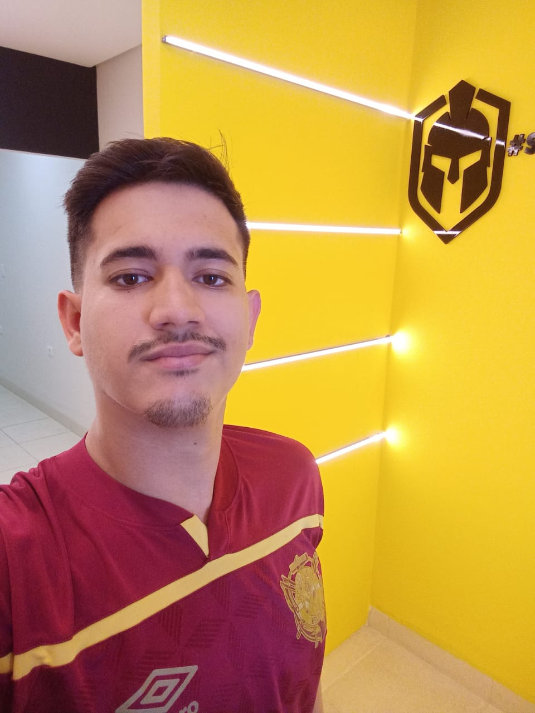
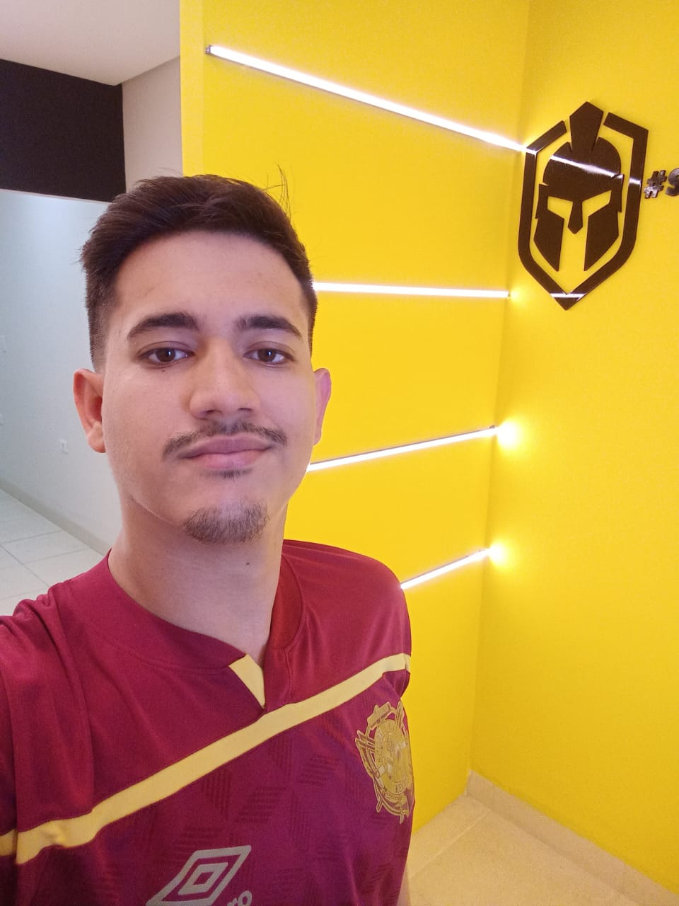

Olá! Somos da
StockView
Co-founders
StockView é uma plataforma inovadora projetada para gerenciar estoques de produtos de forma integrada, eficiente e prática. Nossa solução combina tecnologia de ponta para oferecer controle em tempo real e otimizar o gerenciamento de inventários.
 


My Technologies
Web Development
Site (Frontend): Desenvolvido com HTML para estruturação, CSS para estilização e JavaScript para interatividade.
Site (Back-End): Utilizamos Node.js com Express.js para criar o servidor local e gerenciar as rotas.
Back-End Development
API (Backend): Criada em Python usando o framework FastAPI, responsável por conectar o site, o aplicativo e o banco de dados.
Read MoreMobile Development
Aplicativo Mobile (Android): Desenvolvido em Java e Kotlin, com suporte das seguintes bibliotecas:
-Gson Converter: Para manipular JSON.
-Retrofit2: Para requisições HTTP.
-Glide: Para carregar imagens.
-OkHttp: Para conexões de rede.
-Desenvolvido no Android Studio Ladybug - 2024.2.1 Patch 2.
Membros
Web Development
Site (Frontend): Desenvolvido com HTML para estruturação, CSS para estilização e JavaScript para interatividade.
Site (Back-End): Utilizamos Node.js com Express.js para criar o servidor local e gerenciar as rotas.
Back-End Development
API (Backend): Criada em Python usando o framework FastAPI, responsável por conectar o site, o aplicativo e o banco de dados.
Read MoreMobile Development
Aplicativo Mobile (Android): Desenvolvido em Java e Kotlin, com suporte das seguintes bibliotecas:
-Gson Converter: Para manipular JSON.
-Retrofit2: Para requisições HTTP.
-Glide: Para carregar imagens.
-OkHttp: Para conexões de rede.
-Desenvolvido no Android Studio Ladybug - 2024.2.1 Patch 2.
Mobile Development
Aplicativo Mobile (Android): Desenvolvido em Java e Kotlin, com suporte das seguintes bibliotecas:
-Gson Converter: Para manipular JSON.
-Retrofit2: Para requisições HTTP.
-Glide: Para carregar imagens.
-OkHttp: Para conexões de rede.
-Desenvolvido no Android Studio Ladybug - 2024.2.1 Patch 2.
About StockView
O StockView é uma plataforma inovadora projetada para gerenciar estoques de produtos, combinando tecnologia de ponta com uma interface prática e eficiente. Nosso objetivo é oferecer uma solução robusta que permita aos usuários acompanhar, atualizar e monitorar o estoque em tempo real, promovendo maior controle e organização no gerenciamento de inventários. Para alcançar esse objetivo, utilizamos uma combinação estratégica de ferramentas e tecnologias de alto desempenho.
No site (frontend), utilizamos HTML para estruturar o conteúdo, garantindo que a organização das informações seja clara e acessível. O CSS foi empregado para estilizar e criar layouts modernos e responsivos, oferecendo uma experiência visual agradável e funcional. Já o JavaScript foi essencial para a implementação da lógica de interação e dinamismo, tornando o site mais intuitivo e fluido para os usuários. Para o desenvolvimento e testes do site, utilizamos Node.js como base para o servidor local e o framework Express.js para gerenciar rotas e conexões de forma eficiente.
A API (backend) foi desenvolvida com Python, utilizando o framework FastAPI, que oferece rapidez, flexibilidade e facilidade na criação de serviços web. Esse componente é o elo de integração entre o site, o aplicativo mobile e o banco de dados, garantindo uma comunicação fluida e segura. A API também é responsável por processar e armazenar dados de maneira eficiente, garantindo a confiabilidade e a escalabilidade do sistema.
O aplicativo mobile (Android) foi desenvolvido utilizando Java e Kotlin, linguagens que combinam alto desempenho e compatibilidade com dispositivos Android. Além disso, integramos diversas bibliotecas para otimizar o funcionamento do aplicativo:
- Gson Converter para manipulação de dados JSON, garantindo a comunicação com a API.
- Retrofit2 para realizar requisições HTTP, facilitando a integração do aplicativo com os serviços do backend.
- Glide para o carregamento e exibição eficiente de imagens no aplicativo, mantendo o desempenho otimizado.
- OkHttp para gerenciar conexões de rede de forma estável e segura.
O desenvolvimento do aplicativo foi realizado no Android Studio Ladybug - 2024.2.1 Patch 2, um ambiente de desenvolvimento integrado que permite codificação, depuração e testes de alta qualidade.
Por fim, a integração de todos esses componentes garante que o StockView ofereça:
- Uma interface moderna e intuitiva no site.
- Um aplicativo mobile eficiente e prático, capaz de atender às necessidades de seus usuários em tempo real.
- Uma API robusta que conecta e gerencia todos os elementos da plataforma.
Site
Aplicativo
Com essa combinação de tecnologias, o StockView busca proporcionar uma experiência completa e inovadora, redefinindo o gerenciamento de estoques de maneira integrada, segura e confiável.
Installation instructions
Para instalar e configurar o StockView corretamente, siga os passos abaixo:
Servidor da API
- Criar um ambiente virtual (opcional, mas recomendado):
python -m venv venv source venv/bin/activate # Linux/Mac venv\Scripts\activate # Windows - Acessar a pasta do servidor:
cd servidor_refatorado - Instalar os requisitos do projeto:
pip install -r requirements.txt - Copiar e editar o arquivo de configuração:
Edite o arquivocopy config.json C:/ # Windows cp config.json / # Linux/MacC:/config.jsoncom as variáveis:{ "PORT_LOCAL": 3000, "PRODUCT_MODE": true, "HOST_URL": "127.0.0.1", "START_QUESTION_CAMERA_ID": true, "START_QUESTION_CAMERA": true, "DEFAULT_CAMERA": 0 } - Executar o servidor da API:
python main.py
Agora o servidor estará rodando e pronto para ser utilizado!
Inicialização da Câmera
- Abrir a pasta
Cliente Cameraem outro terminal:cd "Cliente Camera" - Instalar as bibliotecas necessárias:
pip install opencv-python asyncio aiohttp numpy - Executar o script da câmera:
python main-camera.py
Agora a câmera estará operando corretamente e integrada ao sistema!
Contact Me!
O que Fizemos
Durante o desenvolvimento deste projeto, nossa equipe trabalhou em diferentes áreas para criar um sistema funcional e eficiente. No desenvolvimento web, Pedro implementou a rota get-estoque para listar os estoques e a rota get_user_data, permitindo ao administrador visualizar os dados dos usuários. As demais funcionalidades da API web foram desenvolvidas por José Miguel.
No aplicativo, José Miguel foi responsável pelo desenvolvimento do cadastro (frontend e backend), da tela de perfil, do frontend do login e pela implementação das classes de conexão com a API. Além disso, ele criou a funcionalidade de captura de imagens via câmera. Posteriormente, Gustavo aprimorou a funcionalidade de câmera, implementou melhorias no cadastro e desenvolveu o CRUD completo, incluindo a conexão com o servidor e o design das telas do Android.
Para a configuração do ambiente, Gladistony Silva destacou a necessidade do Python e do uso do comando pip install -r requerimentos.txt para instalar as dependências do projeto. Idealmente, a instalação deve ser feita em um ambiente virtual para melhor organização e compatibilidade.
Este projeto representou um grande avanço em nossa experiência com desenvolvimento web e mobile, integração de APIs e otimização de processos, demonstrando nossa capacidade de trabalhar em equipe para entregar soluções eficientes.
github